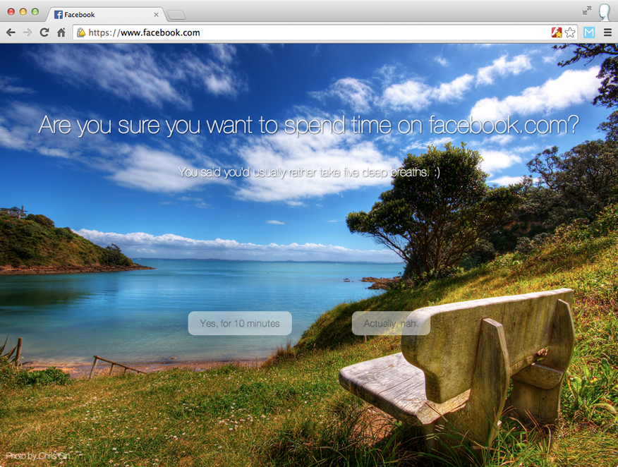
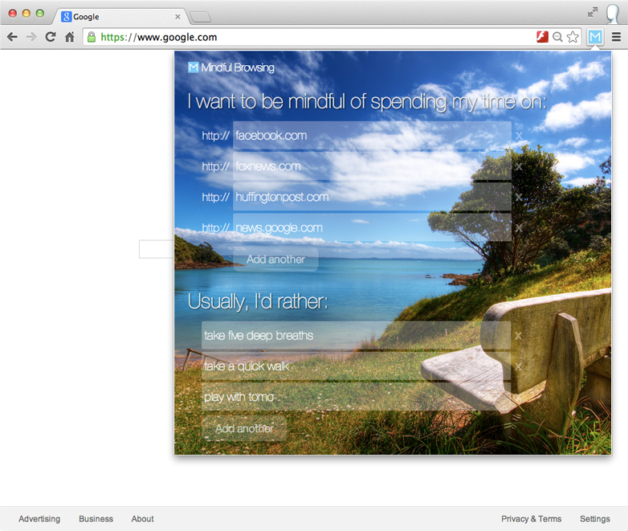

Mindful Browsing
Mindful BrowsingBeautifully interrupts mindless browsing and gets you back to life.
Entirely in your control.
Free. Open. Safe.
Mindful Browsing was built by me, Steven Skoczen, to help with my own mindless browsing. Friends liked it, so I made it available for free on the chrome store.
Mindful Browsing doesn't track any of your activity, and the code is open-source so that you (or a geeky friend) can verify nothing sneaky is going on.
Beautiful.
Mindful Browsing features stunning photographs from some of the world's best landscape photographers. If you're a photographer and are interested in having your work featured, email steven@mindfulbrowsing.com.
Get started.
You can install Mindful Browsing with two clicks. The first one is below.